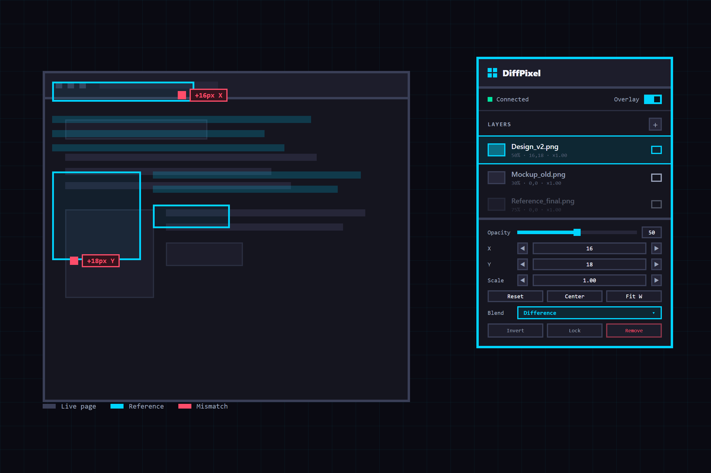

Free · Chrome Extension
Pixel-perfect
overlay comparison
in your browser.
DiffPixel is a free Chrome extension that overlays local reference images — design mockups, screenshots — on any web page, so designers and developers can compare the design and the live implementation pixel by pixel.

FEATURES
Everything you need
for visual QA
DiffPixel puts a full overlay toolkit in a floating panel on the page — no tab switching, no uploads, no server-side processing.
Multiple image layers
Stack several reference images at once. Reorder, lock, hide, rename, and remove layers from the panel. Add files by picker, drag & drop, or paste from clipboard.
Find every mismatch instantly
Switch to Difference and identical pixels turn black — every mismatch lights up, so sub-pixel drift is obvious in seconds. Eight blend modes in all.

Align to the exact pixel
Nudge X/Y and scale with arrow keys or exact values until the overlay lines up perfectly. Reset, Center, and Fit-Width snap a layer into place in one click.
Grid overlay
Toggle a configurable pixel grid to verify spacing, alignment, and visual rhythm against your design system.
Keyboard shortcuts
Nudge layers by 1px or 10px, cycle blend modes, adjust opacity and scale — all without touching the mouse.
Themes & languages
Dark and light panel themes. English and Japanese UI. Per-site visibility that survives page reloads.
HOW IT WORKS
From install to pixel diff
in under a minute.
Three steps is all it takes.

Open the panel
Open the page you want to inspect and click the DiffPixel icon in Chrome. The floating panel appears inside the page.

Add a reference image
Click Add, drag & drop an image onto the panel, or paste one from the clipboard.
Compare & fix
Align with X/Y and scale, lower the opacity or switch to Difference, and spot every mismatch. Your setup is restored after reloads.
AT A GLANCE
Key facts
Everything you need to know before you install.
| Item | Details |
|---|---|
| Price | Free. No account or sign-up required. |
| Platform | Google Chrome extension (Manifest V3). |
| Blend modes | Normal, Invert, Difference, Multiply, Screen, Overlay, Hard Light, Exclusion. |
| Layer controls | Opacity, X/Y position, scale, lock, show/hide, reorder, rename. |
| Extras | Pixel grid, dark/light themes, English & Japanese, keyboard shortcuts. |
| Privacy | No data collection. No analytics, external APIs, or remote code. Everything stored locally in Chrome storage. |
| Supported pages | HTTP/HTTPS pages. file:// pages with the file-URL permission enabled. Chrome internal pages are not supported. |
FAQ
Frequently asked questions
Quick answers about DiffPixel.
What is DiffPixel?
DiffPixel is a free Chrome extension for designers and developers. It overlays local reference images (design mockups, screenshots) on the current web page in a floating panel, so you can compare the design and the live implementation pixel by pixel using layers, blend modes, opacity, position, scale, and a grid.
Is DiffPixel free?
Yes. DiffPixel is completely free. No account, sign-up, or payment is required.
Does DiffPixel upload my images or collect data?
No. DiffPixel does not collect, transmit, sell, or share any data. Reference images and settings are stored only in Chrome storage on your device. The extension uses no analytics, external APIs, or remote code. See the privacy policy for full details.
Which blend modes does DiffPixel support?
DiffPixel supports Normal, Invert, Difference, Multiply, Screen, Overlay, Hard Light, and Exclusion. Difference and Exclusion are especially useful for spotting pixel-level mismatches between a design and the live page.
Which websites does DiffPixel work on?
DiffPixel works on regular HTTP and HTTPS pages. Local file:// pages work after enabling Allow access to file URLs on the extension details page in Chrome. Chrome internal pages and some restricted pages cannot run extensions due to browser limitations.
How do I compare a design with a live page using DiffPixel?
Open the page, click the DiffPixel icon in Chrome, then add a reference image via the Add button, drag and drop, or paste. Align with the X/Y and scale controls, lower the opacity or switch to the Difference blend mode, and inspect mismatches. Settings are restored automatically after reloads. The user manual covers every control and shortcut in detail.
Private by design
DiffPixel ships with zero analytics, zero external requests, and zero remote code. Your screenshots and mockups are yours — they stay in local Chrome storage and never touch a server.
無料 · Chrome 拡張機能
ブラウザ上で
ピクセル単位の
重ね合わせ比較。
DiffPixel は、デザインカンプやスクリーンショットなどのローカル参照画像を任意のWebページに重ねて表示できる無料の Chrome 拡張機能です。デザイナーとエンジニアが、デザインと実装をピクセル単位で比較できます。
機能
ビジュアルQAに必要な
機能をすべて
DiffPixel はページ内のフローティングパネルにオーバーレイ比較のツール一式をまとめています。タブの切り替えも、アップロードも、サーバーも不要です。
複数の画像レイヤー
複数の参照画像を同時に重ねられます。並び替え、固定、表示切替、名前変更、削除に対応。ファイル選択、ドラッグ&ドロップ、貼り付けで追加できます。
ずれを一瞬で発見
差分モードに切り替えると、一致したピクセルは黒くなり、ずれた箇所だけが光ります。サブピクセルのずれも数秒で発見。合成モードは全8種類。
1px単位で完璧に整列
矢印キーや数値でX/Y・スケールを微調整し、オーバーレイをぴったり合わせます。リセット・中央・幅合わせでワンクリック整列。
グリッドオーバーレイ
ピクセル数を指定できるグリッドで、余白・整列・リズムをデザインシステムに沿って検証できます。
キーボードショートカット
1px/10px移動、合成モード切替、不透明度・スケール調整、グリッド切替まで、キーボードだけで操作できます。
テーマと言語
ダーク/ライトテーマ、英語/日本語UI、リロード後も維持されるサイト単位の表示設定に対応。
使い方
インストールからピクセル比較まで
1分以内。
たった3ステップで始められます。
パネルを開く
確認したいページを開き、Chrome の DiffPixel アイコンをクリックします。ページ内にフローティングパネルが表示されます。
参照画像を追加
追加ボタン、パネルへのドラッグ&ドロップ、またはクリップボードからの貼り付けで画像を追加します。
比較して修正
X/Yとスケールで位置を合わせ、不透明度を下げるか差分モードに切り替えて、ずれを確認します。設定はリロード後も復元されます。
仕様一覧
基本情報
インストール前に確認しておきたいこと。
| 項目 | 内容 |
|---|---|
| 価格 | 無料。アカウント登録は不要です。 |
| プラットフォーム | Google Chrome 拡張機能(Manifest V3)。 |
| 合成モード | 通常、反転、差分、乗算、スクリーン、オーバーレイ、ハードライト、除外。 |
| レイヤー操作 | 不透明度、X/Y位置、スケール、固定、表示/非表示、並び替え、名前変更。 |
| その他の機能 | ピクセルグリッド、ダーク/ライトテーマ、英語・日本語、キーボードショートカット。 |
| プライバシー | データ収集なし。分析ツール、外部API、リモートコードを一切使用せず、すべて Chrome ストレージにローカル保存されます。 |
| 対応ページ | HTTP/HTTPSページ。file:// ページはファイルURLアクセス許可で利用可能。Chrome 内部ページは非対応です。 |
よくある質問
FAQ
DiffPixel についての簡単なQ&A。
DiffPixel とは何ですか?
DiffPixel は、デザイナーと開発者向けの無料 Chrome 拡張機能です。デザインカンプやスクリーンショットなどのローカル参照画像を、ページ内のフローティングパネルから現在のWebページに重ねて表示し、レイヤー、合成モード、不透明度、位置、スケール、グリッドを使ってデザインと実装をピクセル単位で比較できます。
DiffPixel は無料ですか?
はい、完全に無料です。アカウント登録や支払いは不要です。
画像のアップロードやデータ収集はありますか?
ありません。DiffPixel はいかなるデータも収集・送信・販売・共有しません。参照画像と設定は端末内の Chrome ストレージにのみ保存され、分析ツール、外部API、リモートコードも使用していません。詳細はプライバシーポリシーをご覧ください。
対応している合成モードは?
通常、反転、差分、乗算、スクリーン、オーバーレイ、ハードライト、除外に対応しています。差分と除外は、デザインと実装のピクセル単位のずれを発見するのに特に有効です。
どのWebサイトで使えますか?
通常の HTTP/HTTPS ページで動作します。ローカルの file:// ページは、拡張機能の詳細ページでファイルのURLへのアクセスを許可するを有効にすると利用できます。Chrome 内部ページなどはブラウザの制限により拡張機能を実行できません。
デザインと実装ページを比較する手順は?
ページを開いて Chrome の DiffPixel アイコンをクリックし、追加ボタン・ドラッグ&ドロップ・貼り付けのいずれかで参照画像を追加します。X/Yとスケールで位置を合わせ、不透明度を下げるか差分モードに切り替えて、ずれを確認してください。設定はリロード後に自動復元されます。詳しくは操作マニュアルをご覧ください。
プライバシー第一の設計
DiffPixel には、分析ツールも、外部リクエストも、リモートコードもありません。スクリーンショットやカンプはあなたのもの — Chrome のローカルストレージに保存され、サーバーに送られることはありません。